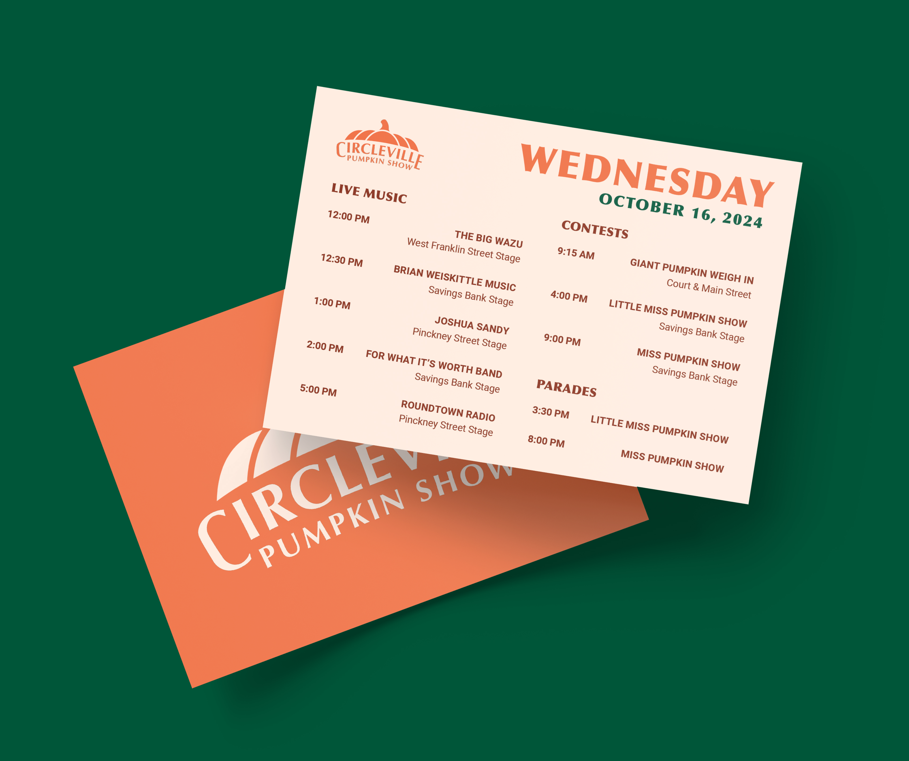
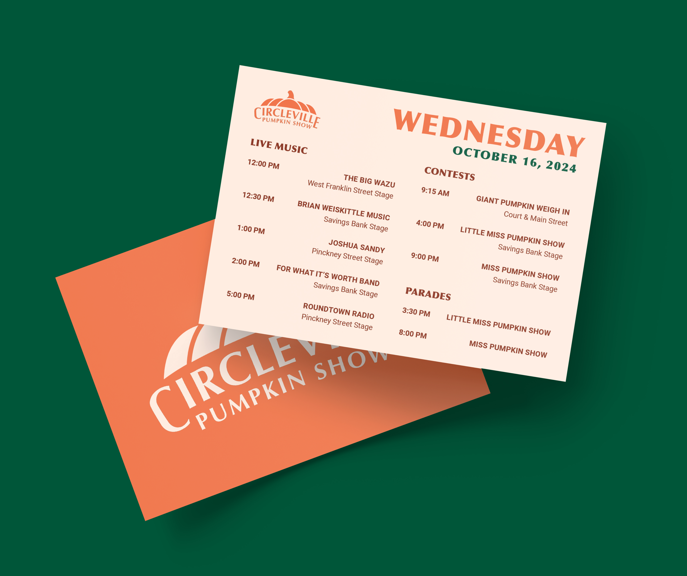

CURRENT LOGO
The current visual identity features the mascot Winky the Pumpkin. It is unsuccessful because it is very outdated, and the type is very close together, making it difficult to read.

Redesign the visual brand identity of the Circleville Pumpkin Show↗ by developing an original logomark and various festival touchpoints that capture the meaning of the festival.
The current visual identity features the mascot Winky the Pumpkin. It is unsuccessful because it is very outdated, and the type is very close together, making it difficult to read.

I started by sketching initial ideas for what the new logo design could look like. I looked at different Old Style typefaces to play into the history behind the festival, while still trying to modernize the logo.
I chose these core colors for the design system to reflect the natural and festive atmosphere of harvest time and the festival. Together, these colors communicate tradition, celebration, and the beauty of fall, aligning with the essence of the Pumpkin Show.
The festival started in 1903, so I wanted to use a typeface that had a historical feel but is not outdated. So, I chose Optima as the main typeface for the logo.
 
